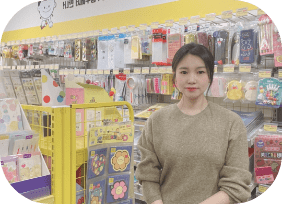

뉴스

뉴스탭
세무회계 스타트업 리드넘버,
빵꾸똥꾸문구야와 MOU 체결
세무회계 스타트업 리드넘버(대표 이석민)가 국내 문구 프랜차이즈 빵꾸똥꾸문구야(공동대표 선장덕)와 업무협약을 체결했다고 26일 밝혔다.
-
세무회계 스타트업 리드넘버, 빵꾸똥꾸문구야와 MOU 체결
뉴스탭 2022.12.26
세무회계 스타트업 리드넘버(대표 이석민)가 국내 문구 프랜차이즈 빵꾸똥꾸문구야(공동대표 선장덕)와 업무협약을 체결했다고 26일 밝혔다.
-
[창업프랜차이즈 8월호] 이색프랜차이즈 빵꾸똥꾸 문구야 새로운 무인 놀이터
월간창업&프랜차이즈 2022.08.16
문구업계 1위에 이어 문구 프랜차이즈 업계 1위를 달리고 있는 <빵꾸똥꾸 문구야>는 과거 아날로그 방식의 문구점을 무인시스템과 디지털 결제시스템을 도입해 새롭게 변신시켰으며 시대 흐름에 맞춰 상품을 다양화하고 새롭고 핫한 아이템을 더해 업그레이드 된 문구점을 완성시켰다.
-
[매일경제] 7월 11일 빵꾸똥꾸문구야 가맹모집
매일경제 2022.07.11
미래형 무인문구점 안심솔루션 개발 SK쉴더스와 오피스넥스 업무형약 체결 더욱 안전하고 편리한 무인점포 운영!
-
2022 매경 100대 프랜차이즈
매일경제신문사 2022.07.07
코로나19 팬데믹 장기화와 원자재 가격 상승, 금리 인상 등으로 경영 환경이 악화되고 있다. 대한민국 프랜차이즈들은 브랜드 경쟁력 강화와 변화하는 트렌드에 맞춘 발 빠른 대응, 가맹점과 본사 간 상생 실천 등으로 이 같은 위기를 극복해나가고 있다. 2022년 매경 100대 프랜차이즈에는 급변하는 시장 환경 속에서 빛을 발한 국내 최고 프랜차이즈 업체 100곳이 선정됐다. 각 업종을 대표하는 브랜드들이 총망라됐다.
-
SK쉴더스-오피스넥스 업무협약식
데일리시큐 2022.05.27
무인 매장 통합 솔루션 ‘캡스 무인안심존’ 기반, 미래형 무인문구점 솔루션 개발 추진 SK쉴더스(대표 박진효)가 오피스넥스(공동대표 선장덕)와 함께 미래형 무인 문구점 안심 솔루션 개발을 위한 전략적 업무협약(MOU)을 체결했다고 26일 밝혔다.
-
[비즈니스코리아] 무인문구점 '빵꾸똥꾸문구야', 론칭 8개월만에 100호점 오픈
비지니스코리아 2022.04.28
[비지니스코리아=김은진 기자] 오피스넥스가 론칭한 무인문구점 ‘빵꾸똥꾸문구야’가 지난 2021년 8월 가맹사업개시 후 8개월만에 100호점을 오픈했다고 밝혔다.
-

[부자비즈] 33세 여사장의 무인창업 성공비결
부자비즈 2022.03.23
무인창업이라고 해서 100% 관리를 안하는 건 아니다. 하집만 유인 점포에 비해서 훨씬 더 많은 개인 여유 시간을 가질 수 있다. 사람 때문에 속썩지 않아도 되고 인건비가 절약된다는 이점도 있지만, 아침부터 밤 늦게까지 매장에 있지 않아도 된다는 게 가장 큰 장점이다.
-
[매장탐방] 매일 만나고 싶은 친구 같은 문구점 '빵꾸똥꾸 문구야 수원매현점' 방문기사
문구Art매거진 3월호 2022.03.15
수인분당선 매탄권선역 근처 아파트단지 내에 자리한 빵꾸똥꾸 문구야 수원매현점은 오픈한 지 한달을 갓 넘긴 신생 문구숍이다. 점주인 황준희 대표는 문구업 경험이 따로 없는 '병아리 문구인'으로, 아직 많은 것이 생소하지만 문구 카테고리와 관련 아이템을 공부하며 문구인으로 거듭나기 위해 열심히 노력하고 있다.
-
[인터뷰] 아날로그 감성 문구점에서 '디지털 문구점'으로 변화를 주도하는 빵꾸똥꾸 문구야!
한국문구 1월호 2022.01.24
오피스넥스 선장덕 공동대표는 미국의 아마존 회사가 2016년 9월 '아마존 고(Amazon Go')라는 무인 매장을 만든 시점부터 무인 문구점 사업에 관심을 가졌다.
-
[인터뷰] 아이들의 새 놀이터 무인문구점, 빵꾸똥꾸 문구야! 선장덕 공동대표
퍼블릭뉴스 2021.12.17
현재의 문구/사무용품 시장은 내리막길이다. 학습준비물은 지자체에서 무상으로 학생에게 지급하고 있고, 대형 온라인몰의 성장과 오프라인 대형매장의 확장 등으로 주변에 문구점을 찾기 힘든 상황이다.
-

[인터뷰] 아이들에게 추억을 선물하는(주)오피스넥스 '빵꾸똥꾸 문구야' 선장덕 대표
시사경제뉴스 2021.11.15
코로나19 여파로 경제·사회·문화 등 모든 영역이 대변화를 맞았다. 가장 큰 변화는 물리적 접촉이 최소화되면서 언택트(Untact) 문화가 확산됐다. 이로 인해 최근 비대면이 일상화되면서 점원 없이 운영돼 첨단기술이 점원의 역할을 대신하는 무인 매장이 늘고 있다.